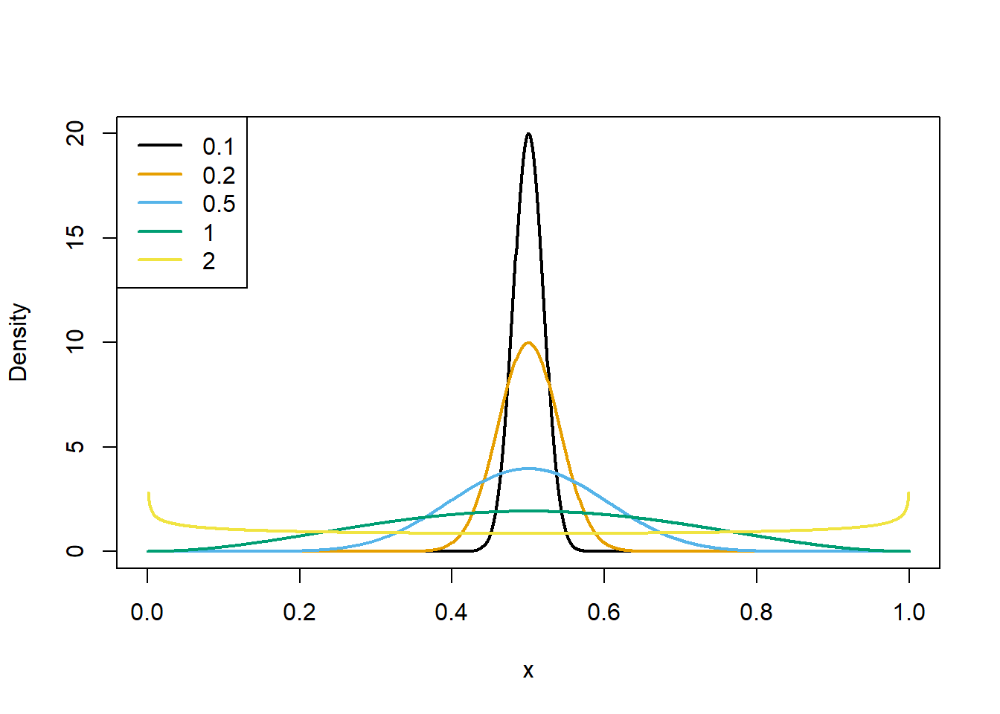

When is it rational to vote? A comment on Barnett (2020)
effective altruism
political science
rationalism
Author
Jonas Moss
Published
Oct 25, 2022
Summary
Barnett (2020) argues it’s rational to vote in a two-candidate run-off if the social benefit of the preferred candidate winning is more than twice the cost of voting.
Barnett’s conclusion goes against the standard binomial model, but that is OK! For the binomial model assumes independent voters and does not incorporate parameter incorporate uncertainty
A modified variant of Barnett’s conclusion holds in the beta-binomial model, a model that generalizes the binomial model but does not assume independent voters. Roughly speaking, the closer we are to a binomial with \(0.5\) success probability, the higher our incentives to vote.
I suggest modifying Barnett (2020) from “vote if the social benefit is twice the cost of voting” to “vote if the social benefit is \(1/5\)th the cost of voting”, in close races. The value of the constant is unlikely to matter much though.
Setup
When is it rational to vote? You’re participating in an election with two possible outcomes, a beneficial outcome (FDR, for instance) and a poor outcome (Mussolini!). The benefit of the beneficial outcome is \(b\). The cost of participating in the election, be it walking to the election booth or signing up for a website, is \(c\). The probability that your vote is decisive, i.e., the the election would have turned out differently had you decided not to vote, is \(\nu\). These quantities are summarized in Table 1.
Table 1: Table explaining the meaning of \(b\), \(c\), \(\nu\)
Letter
Interpretation
\(b\)
The benefit or utility should the beneficial outcome occur, e.g., should your favored candidate be elected.
\(c\)
The cost of casting a vote. Driving to the election booth, getting out of bed before the booth closes, and so on.
\(\nu\)
Probability that your vote is decisive. Also known as voting power.
Ignoring second-order effects such as signalling, it can easily be shown that voting is rationally justified if and only if \(b/c>\nu^{-1}\).
When is voting justified?
Voting is justified if and only if the benefit-cost ratio \(b/c\) is greater than the inverse of the voting power \[b/c>\nu^{-1}. \tag{1}\]
Proof
Define the potential outcome \[X_{\text{vote}}=\begin{cases}
1, & \text{if your candidate wins,}\\
0, & \text{otherwise.}
\end{cases}\] Define \(X_{\text{don't}}\) in the same way. Let \(b\) be the benefit when your candidate wins and \(c\) be the cost of voting. The expected utility of voting is \[\begin{eqnarray*}
EU_{\text{vote}} & = & P(X_{\text{vote}}=1)b-c,\\
EU_{\text{don't}} & = & P(X_{\text{don't}}=0)b.
\end{eqnarray*}\] Voting is justified if and only if the expected utility of voting is greater than the expected utility of not voting, i.e., \[\begin{eqnarray*}
EU_{\text{vote}}-EU_{\text{don't}} & = & \left[P(X_{\text{vote}}=1)-P(X_{\text{don't}}=0)\right]b-c,\\
& \geq & 0.
\end{eqnarray*}\] Now define the voting power as \[
\nu=P(X_{\text{vote}}=1)-P(X_{\text{don't}}=0).\] From these definitions it should be clear that voting is justified if and only if \(b/c>\nu.\)
I’m assuming you’re able to estimate \(b/c\) yourself; I’m focussing on how to model \(\nu\) in this post.
The binomial model
If we know the success probability of the binomial model equals \(1/2\), the probability \(p\) is approximately equal to \(\sqrt{2/\pi}n^{-1/2}\). When draws are decided by a coin-toss, the probability of your vote being decisive is \(\nu = (2\pi)^{-1/2}n^{-1/2}\).
Proof that \(\nu \approx (2\pi)^{-1/2}n^{-1/2}\)
Using \(p=1/2\), your vote is decisive with probability \[\begin{eqnarray*}
\frac{1}{2}\binom{n}{n/2}p^{n/2}(1-p)^{n/2} & = & \frac{1}{2}\binom{n}{n/2}2^{-n/2}2{}^{-n/2},\\
& = & \frac{1}{2}\binom{n}{n/2}2^{-n}.
\end{eqnarray*}\] Using Stirling’s approximation, \[\begin{eqnarray*}
\binom{n}{n/2} & = & \frac{n!}{(n/2)!^{2}}\approx\frac{\sqrt{2\pi n}\left(\frac{n}{e}\right)^{n}}{\left(\sqrt{2\pi n/2}\left(\frac{n/2}{e}\right)^{n/2}\right)^{2}}=\frac{\sqrt{2\pi n}\left(\frac{n}{e}\right)^{n}}{\pi n\left(\frac{n/2}{e}\right)^{n}},\\
& = & \sqrt{\frac{2}{\pi n}}2^{n},\\
& = & \sqrt{2/\pi}n^{-1/2}2^{n}.
\end{eqnarray*}\] It follows that \[\begin{eqnarray*}
\frac{1}{2}\binom{n}{n/2}x^{n/2}(1-x)^{n/2} & = & \frac{1}{2}2^{-n}\sqrt{2/\pi}n^{-1/2}2^{n},\\
& = & (2\pi)^{-1/2}n^{-1/2}.
\end{eqnarray*}\]
It follows that you should vote if and only if \(b/c \geq 2\pi n^{1/2}\).
Figure 1: The beta-binomial model (source: wikipedia).
Its mean is \(E(X) = n\alpha/(\alpha+\beta)\) and its variance \[\operatorname{Var}(X) =\frac{n\alpha\beta(\alpha+\beta-n)}{(\alpha+\beta)^{2}(\alpha+\beta-1)}.\]Defining \(p=\alpha/(\alpha+\beta)\), we see that \(E(X)=np\), just like a binomial distribution. But its variance is on the order \(n^2\), in contrast to the binomial variance, which is on the order \(n\).
Assuming the compound binomial model, Chamberlain and Rothschild (1981) showed that, provided \(n\) is sufficiently large, \[
\nu\approx\frac{1}{4}f\left(\frac{1}{2};\theta\right)n^{-1}.
\] We can easily make use of this result since the beta-binomial is a compound binomial distribution with \(f(p;\alpha,\beta)\) equal to the beta density.
Proposition 1 When \(n\) is sufficiently large, the probability of equal number of votes is approximately equal to \[p=4\frac{2^{-(\alpha+\beta)}}{B(\alpha,\beta)}n^{-1}. \tag{2}\] In particular, when \(\alpha=\beta\), the probability is approximately equal to \[p=2\sqrt{\frac{\alpha}{\pi}}n^{-1}. \tag{3}\]
Combining equation Equation 1 with Equation 3 we find that it is rational to vote approximately when \[\frac{b}{c} > \sqrt{\frac{\pi}{\alpha}}n. \tag{4}\] When \(\alpha\to\infty\), the beta-binomial converges to the binomial distribution. Loosely speaking, the approximation \(\sqrt{2/\pi}n^{-1/2}\) will be better if the number of voters \(n\) is small compared to your certainty about the success probability being close to \(1/2\).
Thinking about \(\alpha\)
In the one-parameter model \(\alpha\) specifies the prior for \(p\), which is centered at \(1/2\). To choose a reasonable \(\alpha\), you might use e.g., quantile matching or the variance \(\frac{1}{4(2\alpha+1)}\).
Matching quantiles can be done using numerical optimization.
#' Match quantiles in a symmetric beta distribution.#' @param p,q The probability (p) and associated quantiles (q).#' @return The `alpha` parameter of a symmetric beta distribution.match <- \(p, q) { f <- \(alpha) (pbeta(q, alpha, alpha, log.p =TRUE) -log(p))^2optimize(f, c(0, 10000))$minimum }match(0.1, 0.05)
[1] 0.6658209
Using 538
We could use e.g. 538 to approximate \(\alpha\) using the Nevada Senate race. Suppose there are \(n=1,000,000\) voters in Nevada. The uncertainty in the uncertainty is dominated by parameter uncetainty,
Implications
There is a plausible model where the probability is proportional to \(n^{-1}\) for any choice of parameters.
However, the proportionality constant shouldn’t be ignored. If the parameters are unfavourable, their effect can dominate the effect of \(n\). It looks like the error bars (\(80\%\) credibility) are approximately \(45\% - 55\%\).
match(0.45, 0.1)
[1] 0.04942326
So let’s say \(\alpha = 81 = 9^2\) for simplicity. Then \(\sqrt{\pi/9^2} = \sqrt{\pi} / 9\approx 1/5\). And you should vote if \(b/c \geq 1/5 n \approx 200,000\). Is it likely that \(b/c\) is this high? I don’t want to think about it right now, but – maybe. The cost of voting is often small, and the reduction in existential risk attained by stopping a republican take-over can easily be larger than \(200,000\) times as large as this cost, even if the probability of an effect is really,really small. (Thinking about this stuff is not my forte.)
Inverting \(c = \sqrt{\pi/\alpha}\) we find that \(\alpha=\pi/c^2\). The beta densities corresponding to the values of \(c(\alpha)\) above are shown below.
Plotting beta densities
x =seq(0, 1, by =0.001)palette("Okabe-Ito")plot(x, dbeta(x, inv(0.1), inv(0.1)), type ="l", col =1, lwd =2,xlab ="x", ylab ="Density")lines(x, dbeta(x, inv(0.2), inv(0.2)), type ="l", col =2, lwd =2)lines(x, dbeta(x, inv(0.5), inv(0.5)), type ="l", col =3, lwd =2)lines(x, dbeta(x, inv(1), inv(1)), type ="l", col =4, lwd =2)lines(x, dbeta(x, inv(2), inv(2)), type ="l", col =5, lwd =2)legend("topleft", col =1:5, legend =c(0.10, 0.20, 0.5, 1, 2), lwd =2, border ="n")

Plot of beta distributions corresponding to various normalized voting powers.
Eyeballing this, if you think the race is close, the black distribution looks reasonable to adopt as your prior on \(p\). And then it’s rational to vote if \(10 b/c\geq n\).
Elections: Senate and presidential
Loading and modifying senate and presidential election data.
Randomness in\(n\). We have treated \(n\) as fixed. If \(n\) is random and is strongly associated with \(p\), our conclusions will not hold.
The binomial model is false. The binomial is the best approximation to reality when dealing with exchangeable raters. But if we loosen up this demand we can have models such as “\(5000\) democrats, \(5000\) republicans, and \(1000\) undecided.” Then \(\nu\) won’t be proportional to \(n\), but proportional to the \(1000\) undecided instead. I doubt using a model like this would make a practical difference though, as the uncertainty in \(p\) would likely increase dramatically.
Small\(n\). The asymptotics takes little time to kick, so I wouldn’t worry unless dealing with an election with just a handful of voters.
Conclusion
Barnett, Zach. 2020. “Why You Should Vote to Change the Outcome.”Philosophy & Public Affairs 48 (4): 422–46. https://doi.org/10.1111/papa.12177.
Chamberlain, Gary, and Michael Rothschild. 1981. “A Note on the Probability of Casting a Decisive Vote.”Journal of Economic Theory 25 (1): 152–62. https://doi.org/10.1016/0022-0531(81)90022-3.
Gelman, Andrew, Jonathan N Katz, and Joseph Bafumi. 2004. “Standard Voting Power Indexes Do Not Work: An Empirical Analysis.”British Journal of Political Science 34 (4): 657–74. https://doi.org/10.1017/S0007123404000237.
{kind=link}